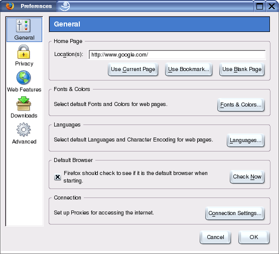
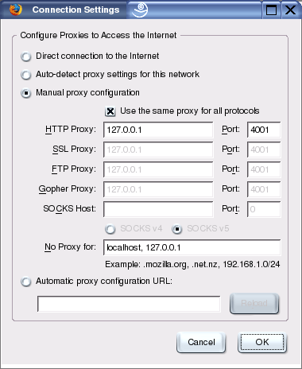

Settings for Various Browsers
JAP Setup for Mozilla-Firefox
To set up JAP for Mozilla-Firefox, do the following steps:
1.) From the menu "Tools", choose the submenu "Settings...". The settings window will open. Choose the "General" category.

2.) To change the proxy server, click on the "Connection Settings..." button. In the new window that opens, choose "Manual Proxy Configuration". Activate "Use the same proxy for all protocols" and enter "127.0.0.1" as the server and "4001" as the port (without the quotation marks).

Note: If you set a different listener port in JAP, you'll have to enter this port here too, rather than 4001.
Recommended plugins for Mozilla firefox
SwitchProxy is a recommended plugin for firefox.

This extension adds a toolbar to firefox allowing fast switching between proxy settings. This is useful for switching between surfing with JAP and non-anonymous surfing without JAP.